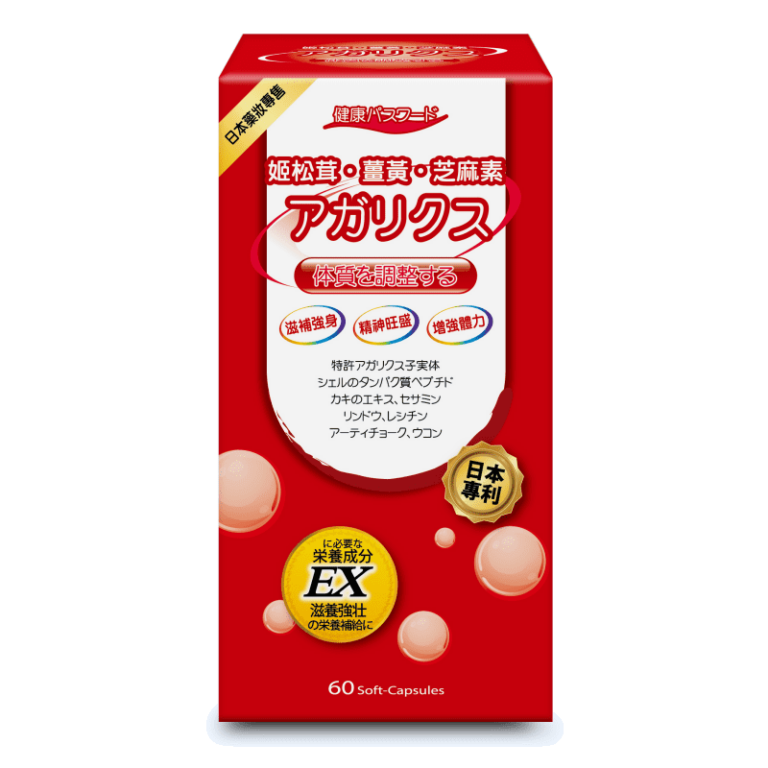

日本原裝進口，主打「姬松茸・薑黃・芝麻素」， 包裝上標示「体質を調整する」（調整體質），是一款強調滋補與活力維持的保健食品。 以下內容為包裝日文的中文翻譯，正式上架前請與廠商確認完整中文標示。
| 品名（日文） | 姬松茸・薑黃・芝麻素 アガリクス |
|---|---|
| 訴求 | 体質を調整する（調整體質） |
| 成分（日文原文中譯） | 專利姬松茸子實體、貝殼蛋白胜肽、牡蠣萃取、芝麻素、龍膽、卵磷脂、朝鮮薊、薑黃 |
| 容量 | 60顆軟膠囊（60 Soft-Capsules） |
| 品牌 | 健康パスワード（健康密碼） |